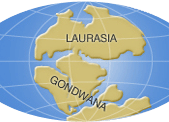
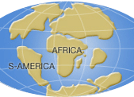

생성원리

발전과정
판구조론은 대륙 이동설에서 시작하여 맨틀 대류설과 해저 확장설로 이어지면서 이론으로 확고히 정립되었으며, 최근에는 맨틀과 지구 내부의 운동이 플룸(지구 내부에 뭉쳐진 열덩어리가 상승 또는 하강함에 따라 생긴 줄기)에 의한 것이라는 플룸구조론이 주목받고 있습니다
대륙이동설
1910년대 독일 기상학자 및 물리학자인 베게너(Alfredo wegener)는 아프리카 서쪽 해안선과 남아메리카 동쪽 해안선이 거의 일치한 것을 우연히 발견하고, 두 대륙간의 동식물화석이 동일하다는 논문을 읽게 되는 계기로 현재의 대륙은 하나의 판게아(Pangaea)라는 초대륙에서 갈라져 이동했다는 ‘대륙이동설’을 발표하게 되었습니다. 최초 지구 표면인 판게아 ⇒ 고생대 말엽 북쪽의 로라시아와 남쪽의 곤드와나로 분리 ⇒ 지속적인 지각운동에 의해 오늘날의 대륙으로 분리하였다는 학설입니다. 하지만 이러한 대륙이동을 일으키는 힘의 근원을 규명하지 못하여 학계에 인정을 받지 못했습니다.
[ 고생대~현재까지의 시대별로 본 ‘최초 지구 표면’(판게아)의 이동 ]
-
고생대 페름기말
(260-250Ma전) - 
종생대 쥐라기
(180-90MA전) - 
신생대 고제3기 초
(65-40Ma전) -
현재
대륙이동설은 여러 가지 증거들(남아메리카 대륙과 아프리카 대륙의 해안선 일치, 인도 대륙 이동, 고지자기 자극 이동)을 제시하였습니다.
- 그림 1. 북미, 남미, 유럽 및 아프리카가 하나의 대륙으로 잘 합쳐짐
- 그림 2. 백악기 말기(약 7000년전)인도 대륙의 이동 모습
- 그림 3. 유럽과 북미에서의 자극의 경로
특히 고지자기 자극 이동의 경우 그림 3-(가)는 1950년대 유럽과 북아메리카 대륙의 지질 시대별 암석의 고지자기 측정 결과인데, 두 대륙에서 자극의 이동 경로를 보면 이동 방향은 비슷하지만 경도상으로 30˚ 이상 서로 떨어져 있습니다. 이것은 지질 시대를 통하여 두 개의 자극이 있었던 것은 아니므로 북미와 유럽이 원래는 하나로 붙어 있었는데 지질 시대가 경과함에 따라 분리되어 서로 멀어진 결과라고 할 수 있습니다. 그러므로 그림 3-(나)와 같이 두 대륙의 자극 이동 경로를 합치시켜 보면 3억 년 전에는 대륙이 하나였다는 결론이 나오고, 이것은 베게너가 주장한 원시 대륙 모양과 같게 됩니다. 이러한 고지자기 연구는 대륙 이동설을 부활시키는 계기가 되었습니다.